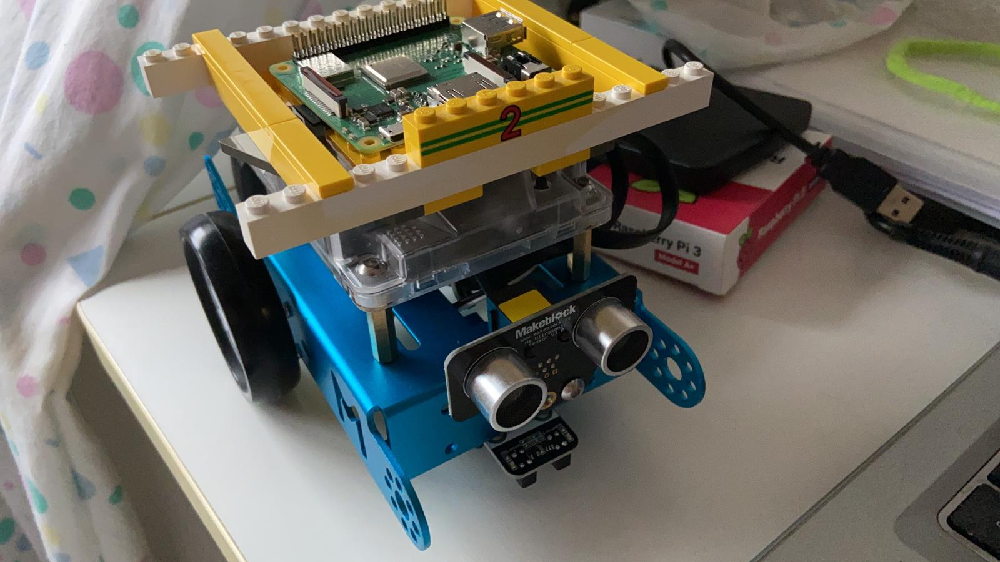
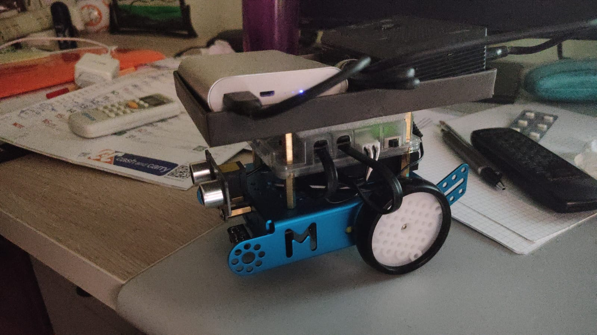

Il motto che ci ha accompagnato dall'inizio alla fine del nostro progetto è stato il seguente:
there is no code without a project, no project without problem analysis and no problem without requirements
TeaRoom è un progetto realizzato come tema finale dato dal prof Antonio Natali dopo aver seguito il corso di Ingegneria dei Sistemi Software M.
Il manager di una sala da tè intende regolare l'accesso al servizio tramite un robot ddr (cameriere). La sala da tè è una stanza rettangolare che comprende: un ingresso per entrare nella stanza e un'uscita per uscire da essa; un numero N (N = 2) di tavoli; un'area di servizio che include un tavolo dove lavora un barman; una sala dotata di un rilevatore di un sonar in grado di rilevare la presenza di una persona (o qualche altra entità) al suo interno.
Il robot può muoversi liberamente lungo i bordi della sala da tè, poiché non ci sono ostacoli.
Come cliente voglio essere informarto quando posso entrare nella sala da tè sicura, sedermi in una tavolo da tè gratuitamente, ordinare un tè, consumarlo (entro un periodo di tempo limitato al massimo), pago il servizio con la mia carta di credito e infine esco dalla stanza. Per una sala da tè sicura, intendo una sala da tè con tavoli da tè puliti posti a una distanza adeguata; nella stanza ci sono clienti la cui temperatura corporea è inferiore a 37,5 gradi. Il campanello posto all'ingresso misurerà automaticamente la mia temperatura corporea e invierà un messaggio di richiesta al cameriere, dandomi un identificativo cliente unico. Se la mia temperatura corporea è ok ma la mia richiesta non può essere soddisfatta immediatamente (poiché la stanza è piena), sarò informato dal cameriere circa il tempo massimo di attesa.
Come manager voglio essere in grado di vedere lo stato attuale della sala da tè utilizzando un browser collegato a un web server associato all'applicazione.
Per capire come è strutturato il git leggi le due sezioni successive. Nella prima vedi quali sono le cartelle e dove sono stati inseriti i file. Nella seconda vengono spiegati i vari file.
Distribuzioni └── componenti da eseguire per vedere il risultato finale it.unibo.virtualRobot2020 └── file configurazione stanza prove.basicrobot └── All css files. resources └── html, css, img che servono per visualizzare il contenuto html Sprint1Old └── html dello sprint 1 Sprint1 └── nuovo html dello sprint 1 dopo correzione con il prof Sprint2 └── html dello sprint 2 Sprint3 └── html dello sprint 3 Problem analysis.html └── html con tutta l'analisi dei problemi dei vari sprint Requirements analysis.html └── html con tutta l'analisi dei requisiti dei vari sprint
| File | Descrizione |
|---|---|
Sprint1\Sprint 0.html, Sprint1\Sprint 1.html,
Sprint2\Sprint 2.html, Sprint3\Sprint 3.html
|
Testo dei vari sprint svolti |
Sprint1\teaRoomAnProbl1, Sprint1\teaRoomAnReq1, Sprint2\teaRoomAnProbl2,
Sprint2\teaRoomAnReq2, Sprint2\clientGui, Sprint2\managerGui
|
Progetti realizzati ad ogni analisi dei requisiti\analisi del problema. |
resources/grafi/*, resources/img/*, resources/parts/*, resources/style/*,
ISSM2020Figs.pptx
|
html, immagini che servono a visualizzare correttamente i file Sprint1\Sprint 0.html, Sprint1\Sprint 1.html,
Sprint2\Sprint 2.html, Sprint3\Sprint 3.html
|
Per un corretto funzionamento si consiglia di usare solamente i componenti che si trovano nella cartella Distribuzioni.
Si consiglia di usare Google Chrome per far funzionare correttamente la Web App. Altri browser potrebbero avere di default impostazioni che non permettono una corretta esecuzione della Web App.
Si consiglia di collegare a una presa elettrica il computer se è un portatile perchè il clock della CPU potrebbe abbassarsi e non far funzionare correttamente il virtual robot.
E' necessario avere un robot fisico. Abbiamo usato l'mbot come consigliato dal prof.
| De Nardi | Bida |
|  |  |
Per un corretto funzionamento si consiglia di usare solamente i componenti che si trovano nella cartella Distribuzioni.
Si consiglia di usare Google Chrome per far funzionare correttamente la Web App. Altri browser potrebbero avere di default impostazioni che non permettono una corretta esecuzione della Web App.
Si consiglia di collegare a una presa elettrica il computer se è un portatile perchè il clock della CPU potrebbe abbassarsi e non far funzionare correttamente il virtual robot.
Version 1.0 - Luglio 2020
© 2020 TeaRoom ISS 2020 - All Rights Reserved.